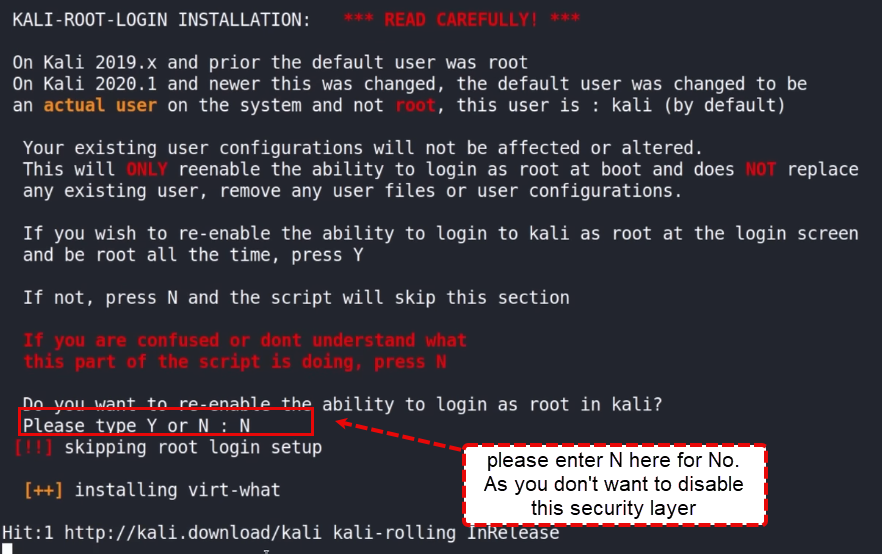

Install from github # pimp my kali

1. Go to github.com and copy a repository
2. Open a Termin in Kali
3. Change the user to root: sudo su
4. go to your opt repository: cd /opt
5. clone the github repository: git clone https://github.com/Dewalt-arch/pimpmykali.org.git
6. go to the repository where the installation files are located: cd pimpmykali/

7. from there you can us the ls comand to look what is in the folder, then run the file you want

then you will land here:

8. press 0 to run all the step from 1 to 9

9. Don't enable the use of the root user
